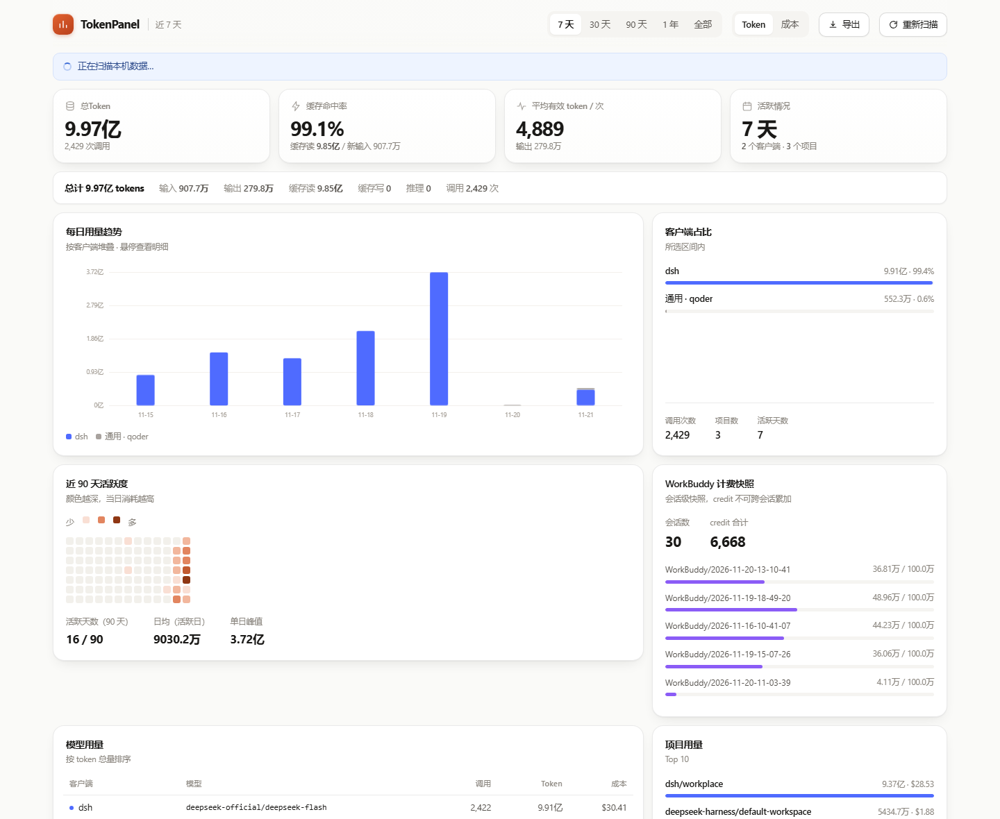

同时用着 Claude Code、Codex、OpenCode、dsh、WorkBuddy？ 它们各自把用量藏在不同的目录里。TokenPanel 自动找出来、统一量化， 告诉你这个月到底烧了多少 token、花了多少钱。

各家客户端的数据格式互不兼容，官方面板又各看各的
扫描本机目录，按结构指纹识别 11 类客户端，不依赖写死的清单。没专门适配的工具，只要日志里有 token 字段也能被识别。
所有数字按「万 / 亿」展示，不再对着 1,043,270,912 数零。支持 Token 与金额双视图切换。
只读打开本地日志与数据库，不修改原始数据、不上传任何内容。唯一的联网行为是你主动点击「检查更新」。
不需要安装、不需要命令行、不需要配置
能拿到逐条 usage 的才统计，拿不到的如实标注，不做估算
| 客户端 | 采集粒度 | 状态 |
|---|---|---|
| Claude Code | 逐次调用（含缓存读写、thinking） | 可量化 |
| dsh（DeepSeek） | 逐次调用（含缓存读写） | 可量化 |
| OpenCode | 逐次调用，原生成本 | 可量化 |
| Codex CLI | 逐回合 | 可量化 |
| WorkBuddy | 会话级快照 + credit | 可量化 |
| Qoder / 其他 | 通用探测器，按字段特征识别 | 部分可量化 |
| Cursor / Trae / Windsurf / Copilot | 用量在云端 Dashboard | 仅发现，不估算 |